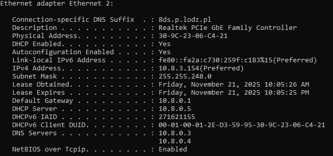
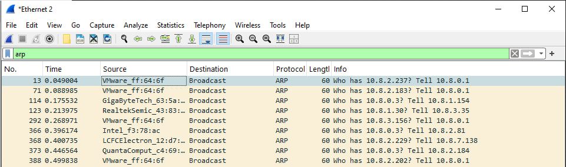
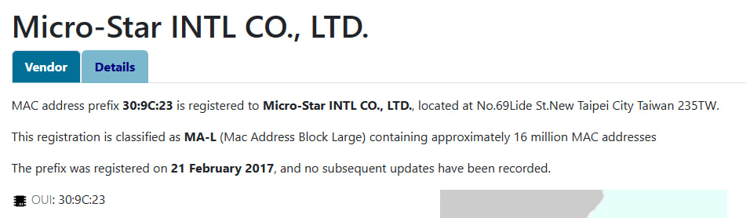
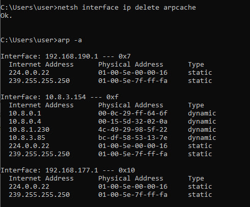
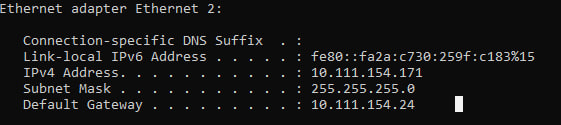
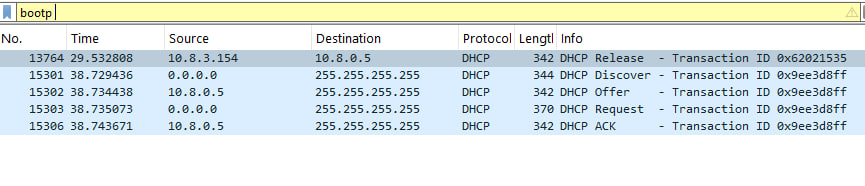
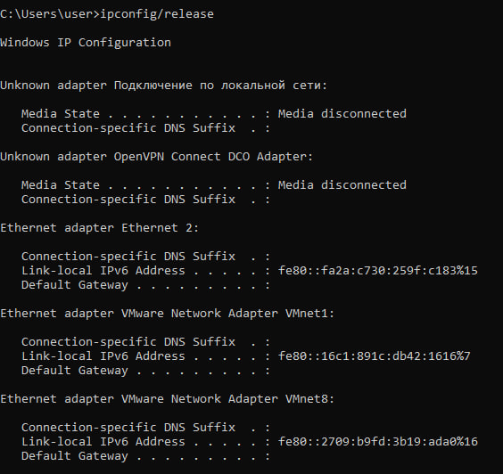
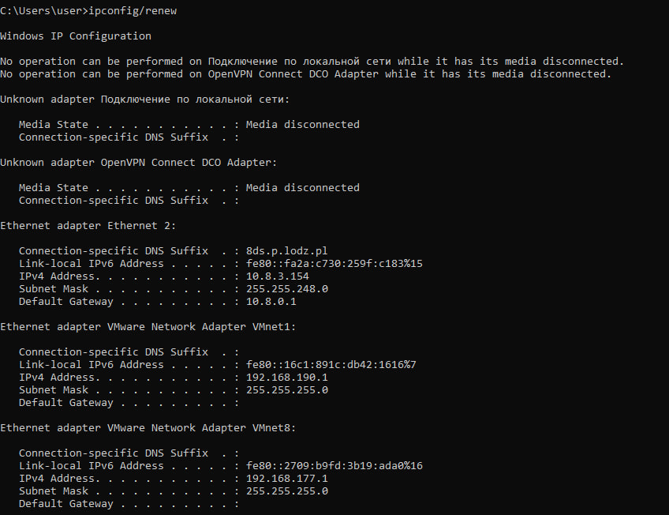
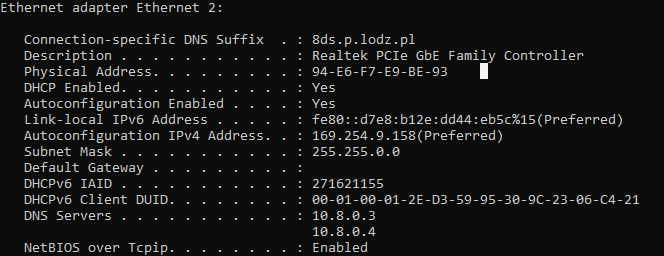

1.1 Ethernet standards for physical layer, Ethernet limits, Ethernet frame
Ethernet physical-layer standards. Ethernet specifies how bits are represented and carried over a chosen medium. Common media include twisted-pair copper (Cat5e/Cat6/Cat6a/etc.), coaxial cable (legacy), and optical fiber. /p>
| Category | IEEE documentation | Standard | Medium | Speed | Distance |
|---|---|---|---|---|---|
| Ethernet | 802.3a | 10 Base2 | Coxial | 10 Mbps | 200 meters |
| 802.3 | 10 Base5 | 500 meters | |||
| 802.3i | 10 BaseT | UTP | 100 meters | ||
| Fast Ethernet | 802.3u | 100 BaseTx | UTP | 100 Mbps | 100m |
| 100 BaseFx | MMF | 2km | |||
| 100 BaseFx | SMF | 20km | |||
| Gigabit Ethernet | 802.3z | 1000 Base T | UTP | 1 Gbps | 100m |
| 1000 Base SX | MMF | 275m | |||
| 1000 Base LX | 512m | ||||
| 1000 Base LX | SMF | 20km | |||
| 1000 Base SH | 80km | ||||
| 10 Gig Ethernet | IEEE 802.3ae | 10GBase-ER | SMF | 10 Gbps | 10km |
| 10GBase-LR | 40km |
Ethernet limits. Physical constraints come from the medium and the standard: maximum link distance (which varies by cable/fiber type), attenuation and crosstalk constraints, and practical throughput limits determined by cable quality, electromagnetic interference, and hardware capabilities. In legacy shared-medium topologies, timing constraints also determined maximum network diameter for reliable collision detection.
Ethernet frame structure. The basic Ethernet frame contains a preamble (for synchronization), destination and source MAC addresses (each 6 bytes), an EtherType or length field, the payload (user data) and the Frame Check Sequence (FCS — typically a 4-byte CRC for error detection). Typical payload sizes range from a minimum of 46 bytes (padding applied if needed) to a maximum of 1500 bytes for standard MTU; larger frames (jumbo frames) are possible on some networks.

1.2 MAC address, broadcasting
MAC address. A Media Access Control (MAC) address is a 48-bit hardware identifier burned into or assigned to a network interface. It is usually shown as twelve hexadecimal digits grouped in pairs (e.g. 00:1A:2B:3C:4D:5E). The first 24 bits (the OUI — Organizationally Unique Identifier) denote the vendor or manufacturer; the remaining bits identify the specific interface. MACs are used for local-link delivery and switching decisions within a LAN.
Broadcasting. Broadcasting is the mechanism of sending a single frame that every device on the local link will receive. Ethernet uses the special broadcast MAC address FF:FF:FF:FF:FF:FF. Broadcasts are useful for discovery protocols (like ARP requests) but should be limited because they are delivered to all hosts and can increase load on large networks.
1.3 The difference between hub, switch and router
Hub. A hub is the simplest network device and functions at OSI Layer 1 (physical layer). It repeats electrical signals received on one port to every other port, creating a single shared collision domain. Hubs do not inspect frames or implement any addressing logic; they simply broadcast the raw signal.
Switch. A switch operates primarily at OSI Layer 2 (data-link layer). It learns which MAC addresses are reachable through which physical ports, stores that information in a MAC table (CAM table), and forwards frames only to the port associated with the destination MAC. This selective forwarding reduces unnecessary traffic and collisions compared to hubs. Advanced switches can operate at higher layers and provide features such as VLANs, QoS, and ACLs.
Router. Routers work at OSI Layer 3 (network layer) and forward packets between distinct IP networks. They make forwarding decisions based on IP addresses and maintain routing tables (static or dynamic). Routers enable inter-network communication, provide path selection, and often include services such as NAT, firewalling, and DHCP relay.

1.4 CSMA/CD, collision, half and full duplex
CSMA/CD. Carrier Sense Multiple Access with Collision Detection (CSMA/CD) is the access method originally used in Ethernet shared-media environments. Before transmitting, a station listens to the medium (carrier sense). If the medium is idle, the station transmits. If two stations transmit simultaneously, a collision occurs; both transmitters detect the collision (collision detection), abort their transmissions, and schedule retransmission after a randomized backoff interval.
Collision. A collision is when overlapping transmissions interfere with each other on a shared medium, corrupting the frames. Collisions are inherent to half-duplex shared-medium topologies and are managed by CSMA/CD. In modern switched full-duplex links collisions are effectively eliminated.
Half-duplex vs Full-duplex. In half-duplex mode a port can either send or receive at any moment — devices contend for the medium and collisions can happen. In full-duplex mode, send and receive are independent (typically using separate wire pairs), allowing simultaneous bidirectional traffic and removing the need for CSMA/CD.

1.5 ARP request, detecting doubled IP address
ARP (Address Resolution Protocol) request. ARP is the protocol that resolves IPv4 addresses to MAC addresses on a local network. When a host needs the MAC for a given IPv4 address, it broadcasts an ARP request asking “Who has X.X.X.X? Tell Y.Y.Y.Y” (Y.Y.Y.Y is the sender’s IP). The host that owns that IP responds with an ARP reply containing its MAC, allowing the requester to populate its ARP cache and send the frame to the correct link-layer address.
Detecting duplicate (doubled) IP addresses. Duplicate IP addresses occur when two devices are configured with the same IPv4 address on the same network, producing conflicts. Detection methods include:
- Observing inconsistent or rapidly changing ARP cache entries for the same IP (different MACs seen).
- Seeing multiple responses to pings for the same IP (more than one device replies).
- Using a gratuitous ARP on boot: a host announces its own IP-to-MAC mapping; if another host already uses that IP, it may respond or other hosts may notice conflicting entries.
- Network scanning and monitoring tools (arp-scan, nmap, centralized IPAM/DHCP logs) which can flag duplicate assignments.
1.6 BOOTP, DHCP
BOOTP (Bootstrap Protocol). BOOTP was an early protocol to provide basic network configuration to diskless workstations and other clients. BOOTP servers typically store static mappings between client MAC addresses and assigned IP addresses (and possibly boot filenames). A BOOTP client broadcasts a request and the server replies with configuration information based on preconfigured entries. Because of its static nature, BOOTP is less flexible for dynamic environments.
DHCP (Dynamic Host Configuration Protocol). DHCP is an extension and superset of BOOTP that adds dynamic address allocation and a richer set of configuration options. DHCP servers assign addresses from pools with lease durations, provide gateway and DNS information, and support automated reallocation and renewal (DORA: Discover → Offer → Request → Acknowledge). DHCP can also be relayed across networks via DHCP relay agents, allowing centralized address management.
1.7 VLANs
What are VLANs? Virtual LANs (VLANs) let administrators partition a single physical switch fabric into multiple logical broadcast domains. Each VLAN groups a set of ports (or tagged frames) so devices within the same VLAN communicate as if they were on the same LAN, while broadcasts are contained within that VLAN.
Benefits. VLANs reduce broadcast traffic scope, improve security by isolating groups of hosts, and provide flexibility in network design — for example grouping users by department regardless of physical location.
Types & tagging. VLANs can be implemented as port-based (ports assigned to a VLAN) or tag-based using the IEEE 802.1Q standard. 802.1Q inserts a 4-byte tag into Ethernet frames containing priority and a VLAN identifier, enabling multiple VLANs to share a single trunk link between switches. Service provider networks may use Q-in-Q (stacked tags) to encapsulate customer VLANs inside provider VLANs.
Inter-VLAN communication. Traffic between VLANs requires routing (inter-VLAN routing) performed by a router or Layer-3 switch. This allows administrators to enforce policies and access control between logical networks.
2.1 Finding MAC address using ipconfig, MAC address of default gateway using Wireshark
Finding MAC Address and Default Gateway MAC
Using the command “ipconfig /all”, the MAC address of the local network adapter was identified.
Wireshark was then used to capture ARP traffic, and the ARP replies were analyzed to determine the MAC address of the default gateway.
2.2 Find the producer of network adapter
Identifying the Producer of the Network Adapter
The manufacturer of the network interface card was determined through the adapter properties in the operating system (MAC address).
2.3 Flush ARP cache
The ARP cache was cleared using the appropriate system command. This ensured that all subsequent ARP entries were newly generated by actual network communication.
2.4 Set the same IP address on two different hosts in the lab and detect it using arp request
Setting the Same IP Address on Two Hosts and Detecting Conflict
Two hosts were configured to use the same IPv4 address.
2.5 Using Wireshark save the packets required to obtain IP address through DHCP
Capturing DHCP Packets in Wireshark
Wireshark was used to capture DHCP traffic during the IP assignment process. The DHCP Discover, Offer, Request, and Acknowledgment messages were saved for analysis.
2.6 Release and renew IP address using ipconfig
Releasing and Renewing IP Address
The IP address on one of the hosts was released and renewed using the system command. This triggered DHCP communication, confirming proper address allocation.
 2.7 Change MAC address of a computer in the lab to the same as the MAC address of the other computer in the lab and verify IP address obtained
Changing MAC Address and Verifying New IP
The MAC address of one computer was modified to match the MAC address of another lab computer. After changing the MAC address, the IP address was renewed, and the result was verified to confirm how DHCP assigned an address based on the altered MAC identity.
